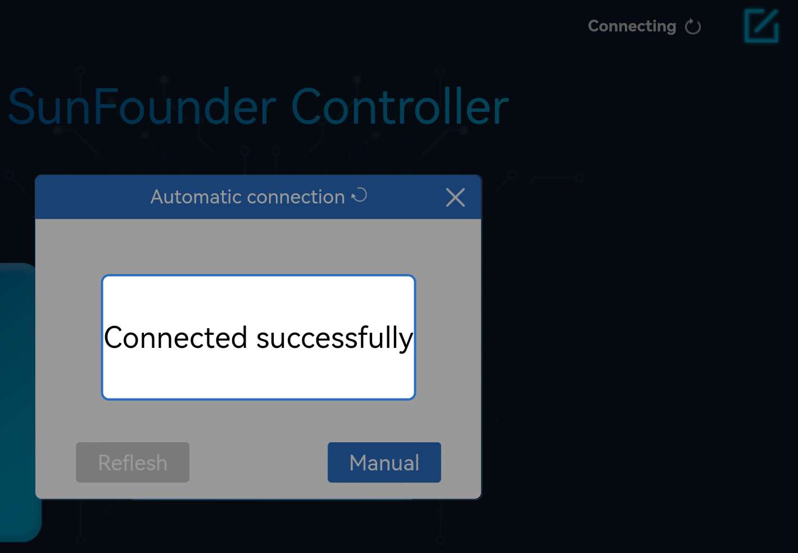

Note
Hello, welcome to the SunFounder Raspberry Pi & Arduino & ESP32 Enthusiasts Community on Facebook! Dive deeper into Raspberry Pi, Arduino, and ESP32 with fellow enthusiasts.
Why Join?
Expert Support: Solve post-sale issues and technical challenges with help from our community and team.
Learn & Share: Exchange tips and tutorials to enhance your skills.
Exclusive Previews: Get early access to new product announcements and sneak peeks.
Special Discounts: Enjoy exclusive discounts on our newest products.
Festive Promotions and Giveaways: Take part in giveaways and holiday promotions.
üëâ Ready to explore and create with us? Click [here] and join today!
1.1 First-time Use the APP¶
This section will guide you to complete the communication between Sunfounder Controller APP and Pico, you can read the value of the potentiometer on the APP, and you can also control the LED on and off through the APP.
How to do?
Build a circuit.
Upload the library.
Reference 1.4 Download and Upload the Code to download the code and upload the library. But in this project, you need to upload
ws.pyfrom theeuler-kit/esp8266/path to the Raspberry Pi Pico.Run
1.1_ws_test.pyfile.Double click the
1.1_ws_test.pyfile under theeuler-kit/esp8266/path, then click run current script button or just press F5 to run it.After running the program, you will see the IP address and the
startprompt in the Shell.Warning
If the wiring is OK, but still no successful connection prompt after several runs, the firmware of ESP8266 module may need to be re-burned, please refer to How to re-burn the firmware for ESP8266 module? for details.
Connect to ESP8266.
Find my_esp8266 on the WLAN of the mobile phone (tablet), enter the password (12345678) and connect to it.
The default used in
1.1_ws_test.pyis AP mode. So after you connect, there will be a prompt telling you that there is no Internet access on this WLAN network, please choose to continue connecting.
Install Sunfounder Controller.
Search for Sunfounder Controller in APP Store (or Google Play) and download it.

Connect to SunFounder Controller.
Now open SunFounder Controller and click Disconnected in the upper right corner.
Because it is AP mode, it will connect automatically here.
Note
If the connection has not been successful, please make sure the
1.1_ws_test.pyfile is running properly and connect your device’s Wi-Fi tomy_esp8266.
After the connection is successful, the Thonny script will show the IP of the newly connected device:
>>> %Run -c $EDITOR_CONTENT Connecting WebServer started on ws://192.168.4.1:8765 start Connected from 192.168.4.3Create a controller.
Click the + button in the middle of the page, then the Create controller page will pop up. Enter the name of the controller, select Blank -> Dual Stick and click Confirm.
You will be able to see boxes (some are rectangles, some are squares), we need to adjust them to apply to
1.1_ws_test.py.Click on area G and select the Number widget.
Click on area H and sclect the Slider widget.
Save and Run the controller.
Click the Save/Edit button and the controller will be saved. At the same time it enters the working state, and the empty widget box is hidden.
Then click the Run/Stop button to get this controller running！

The value of the potentiometer will displayed on the G area.
If you slide the slider of the H box, the brightness of the LED will change.
Note
If it does not work as expected, or if it shows disconnected, make sure that the
1.1_ws_test.pyfile is running properly and that your mobile device’s Wi-Fi is connected to themy_esp8266.
FAQ
Error during running code.
When the following error occurs, please check if the ESP8266 connection is stable.
Traceback (most recent call last): File "<stdin>", line 43, in <module> File "<stdin>", line 41, in main File "ws.py", line 115, in loop File "ws.py", line 46, in read UnicodeError:
Then hit Stop to stop running the code, and then run the code again.
Each time you re-run the code, you need to reconnect your device (phone/tablet) WIFI to
my_esp8266, and then go to SunFounder Controller and click Disconnnected to reconnect.If the connection has not been successful, or suddenly disconnect.please make sure the
1.1_ws_test.pyfile is running properly and your mobile device is connected tomy_esp8266.